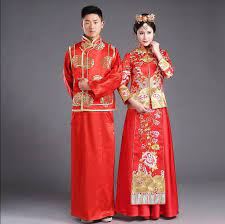

English
Malaysia's Tradisional Clothes
-
1. Samfoo

- Samfoo is one type of traditional Chinese clothing.
- Traditional Chinese shirt or even Samfoo is the favorite clothing of Chinese Peranakan men today.
This shirt is matched with loose slacks in matching colors.
This shirt is made of satin fabric with the texture of traditional Chinese motifs.
This collared split-front shirt is loosely stitched and fastened with beautiful and neat button-knots.
- This Chinese dress or Samfoo is worn by a number of Chinese Peranakan or Baba Nyonya Melaka on festive days and public events.
For Samfoo, red is often chosen as a lucky color but other colors are still used but black is often avoided.
2. Negeri Sembilan Wedding Dresses
- The clothes worn by brides in the Perpatih traditional Malay community in Negeri Sembilan include Baju Kurung Labuh,
Baju Kebaya Long and Baju Kebaya Half Pole. The fabric material that is often used is songket woven fabric with scattered or full flowers, brocade fabric and woven fabric.
The match with the shirt is the cloth.
- The bride's dress is styled with Sanggul Lintang or 'sunting'. Sunting is a headdress made of gold-plated copper or zinc.
There are various types of edits including floral motifs, plants, poultry and animal shapes such as birds, fish and butterflies.
3. Baju Kurung Pahang
- Kurung Pahang has a flourishing pesak. This fashion was created in the 1880s. This shirt was originally worn by royal princesses and nobles
because it is exclusive where the fabric used at that time is a pair of Pahang woven cloth and is also matched with a folded songket cloth
look to the right.
- What differentiates it from other baju kurung is that this dress does not have a kekek but is replaced with Pesak Gantung. The jewelry is worn with
A bun and flowers on the head with a dooh on the chest and a kerikam (short scarf) on the shoulders.
4. Cekak Musang Malay Shirt
- A pair of Baju Melayu Cekak Musang from plain or striped satin type complete with pesak and kekek, round high collar and
slightly split in the front with 5 buttons and 3 pockets, one small on the chest and 2 large at the bottom of the shirt.
- Matched with pants of the same type of fabric and styled with side fabric songket with a puffy roll tie.
While the songkok is worn as a highlighter and a complement to clothing when attending official events and public events.
5. Commander's Shirt
- Si Awang Sulung's Outer Trade Clothes and martial arts pants. Used together with the 'Anak Elephant Menyusu' tie and the side use of the 'Panglima' tie
packaged with a bent wrap. Equipped with 'Golok Perak' as a weapon and shod with shoes.
6. Lady's Long Dress
- Women's Long Sleeve Dress in Melaka is also called Long Dress or Short Sleeve Dress. Commonly worn by Peranakan ladies and also the Chetti people
matched with batik fabric or sticky pattern fabric. The fabric used to make this Baju Panjang is from rare gauze.
So that white shirt or other bright color, with a high collar and decorated with lace is worn on the inside of the shirt.
- The head ornaments used are buns and combs made of gold or silver dipped in gold.
A large handkerchief is styled over the shoulder as a complement to this Baju Panjang.
- This long dress is still worn by ladies who are old to this day when attending traditional wedding ceremonies and official celebrations.
Apart from that it is also used as clothing for performing arts.
7. Penampang Kadazan Traditional Clothing
- Traditional clothing of the Kadazan Tribe of Penampang is known as 'Sinuangga' which is worn by women and 'Gaung' for men.
This shirt usually uses black cloth (velvet cloth) embroidered with gold thread. It is worn during the celebration of the Harvest Festival or known as the festival
'Tadau Kaamatan' at the end of May every year. During this festival, various events are held such as the 'Unduk Ngadau' beauty pageant,
where the participants will demonstrate various types of traditional clothing of the Kadazandusun tribe.